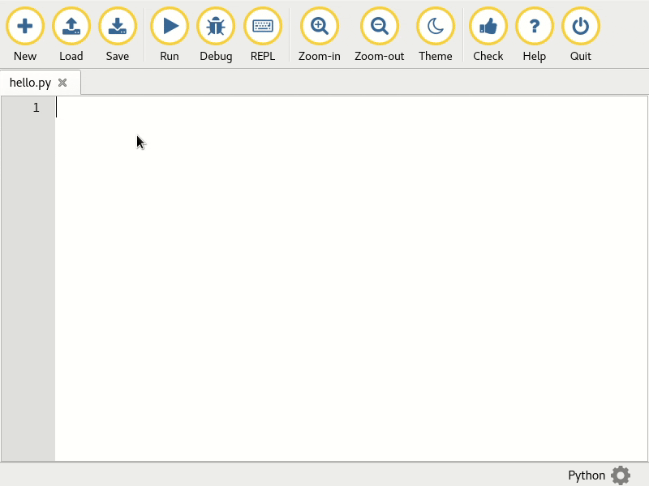

Developing Mu's Website¶
The purpose of Mu's main website https://codewith.mu/ is to provide four things:
- Instructions for getting Mu.
- Learning oriented tutorials to show users how to get started with Mu.
- Goal oriented "how-to" guides that show how to solve a specific problems or achieve particular tasks.
- Links to other community-related resources such as the developer documentation you're reading right now, and online community discussions.
The site itself is hosted for free on GitHub Pages as a Jekyll created static site. The source code is found in the mu-editor.github.io repository. As soon as a new change lands in the master branch of the site's repository, GitHub automatically rebuilds the site and deploys it. This means everything is simple and automated.
We expect everyone participating in the development of the website to act in accordance with the PSF's code_of_conduct.
Developer Setup¶
- Follow the instructions for your operating system to install the Jekyll static site generator.
- Get the source code from GitHub:
- From within the root directory of the website's source code, use Jekyll to build and serve the site locally:
- Point your browser to http://127.0.0.1:4000 to see the locally running version.
As you make changes to the website's source, Jekyll will automatically update the locally running version so you'll immediately see your updates.
Warning
If the instructions above don't work, and since Jekyll isn't supported for all environments, a Vagrant image can be used for instead. Assuming you have Vagrant installed:
git clone https://github.com/lcreid/rails-5-jade.git
cd rails-5-jade
vagrant up
vagrant ssh
git clone https://github.com/mu-editor/mu-editor.github.io.git
cd mu-editor.github.io
bundle install
jekyll serve --host 0.0.0.0 --force_polling
You may need to restart your VM to ensure the port forwarding works properly.
The source code is arranged as a typical Jekyll website except it's not a blog,
so there are no articles in the _posts directory.
Since we need our website to be easily translatable all the content will be in
a directory named after the ISO language code of the translation. For example,
all the original English content is in the en directory in the root of the
repository. All images should be in the img directory. If an image is for
a specific translation of the website, it should be in a subdirectory of
img which is named after the ISO language code (for example, as there is
for img/en).

We use GIF based screen captures throughout the site (such as on the front page). The dimensions for such captures of Mu are 1140x660 pixels and must not include the window title bar (provided by the operating system). So far, we have found the peek utility on Linux an excellent choice for making such GIF based screen captures.
When adding such animated screen grabs please ensure the img element has
the following classes (for the sake of visual consistency):
img-responsive center-block img-rounded movie.
Internationalisation of the Website¶
There are two ways to contribute to the translation of Mu's website:
- Add / update existing content for your target language.
- Start a completely new translation for your target language.
When adding content to an existing translation of the website please remember
that files can be either HTML or Markdown. At the top of each file is a YAML
based header that must contain three entries: layout which must always
be default, title which should be the title of the page you're creating
and i18n which much be the ISO language code for your translation (this is
used so the correctly translated version of the site's menu is displayed).
For example, the YAML header for the index.html site in the en
sub-directory looks like this:
The workflow for creating a new translation of the website is:
- Create a new directory named after the
ISO language code for the new
translation. For example, if we were creating a new French translation of
the site, we'd create a
frdirectory in the root of the repository. - Ensure there's a version of the
index.htmlfile found in the root of the repository, translated into the target language in the new directory you created in step 1. Also ensure you copy the structure of the main sections of the website found in theenversion of the site. - In the
_includesdirectory found in the root of the repository, you must add the new language as a list item in thelang_list.htmltemplate. Ensure that the href for the link points to the new directory, and the name of the translation is in the target language. For example, this is how an entry for French would look (note the use of the French word for "French"):
- In the same
_includesdirectory, create a copy of thenav_en.htmlbut with theensection of the name replaced with the ISO code for the new target language. For example, if we were to do this for a French translation, our new file would be callednav_fr.html. This file defines how the site's navigation bar should look. Make sure you translate the English version into your target language and remember to update the href values to use the new directory created in step 1. - Remember that the YAML headers for your new translation should have an
i18nvalue with the expected ISO language code for the new target language. For example, if we were writing a new page for the French translation, thei18nentry would have the valuefr.
Assuming you followed all the steps above, you should see your new language in
the "language" dropdown in the site navigation. Clicking on it should take you
to the index.html page in the new directory you created for the target
language, and the site navigation should reflect the newly translated
navigation template.
From this point on, it's just a case of adding content to the newly translated
version of the site in much the same way as it is done in the "default"
en directory.